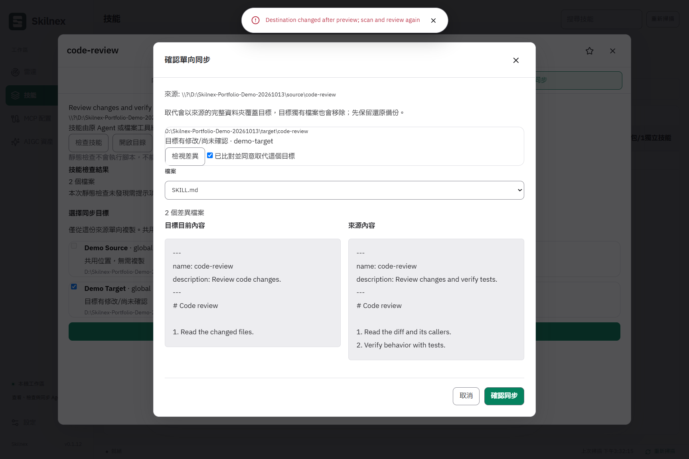
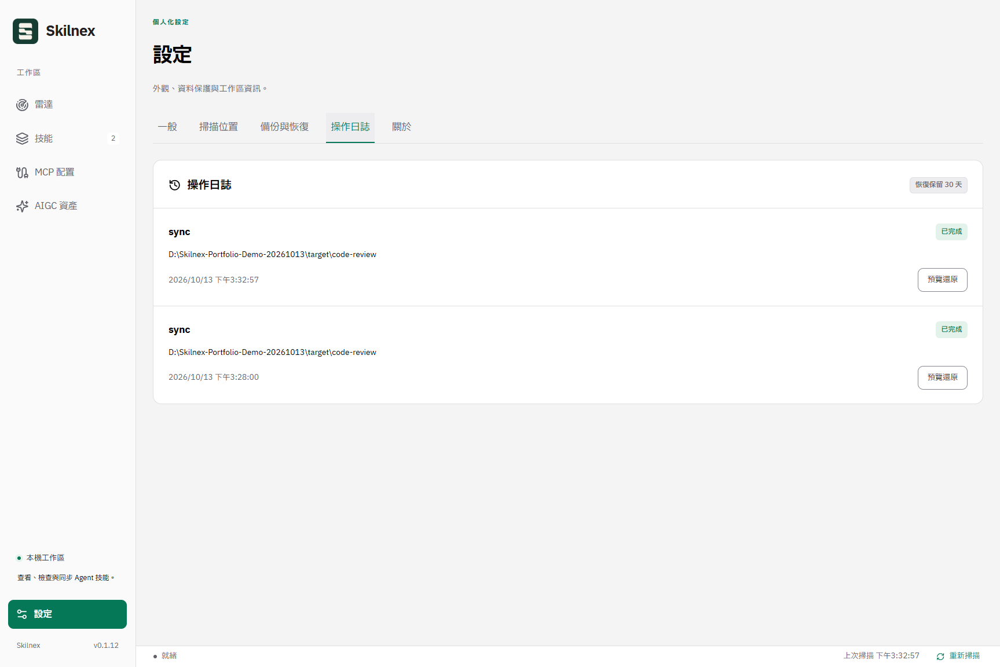

Find it. Understand it.
See sources, agents, and global or project locations in one place. Search full text and read SKILL.md and attachments without hunting through folders.
YOUR SKILLS. YOUR CONTROL.
Bring your local agent skills together.
Find, read, and organize. Then review
before you sync.
Windows x64 Local-first You confirm every sync
The agents you already use. Less back-and-forth.
Skill discovery and static inventory adapters for six products—not certification of every version or skill at runtime.
01 / LESS FRICTION
Keep the way you work with agents.
Bring clarity to the skills
around them.
See sources, agents, and global or project locations in one place. Search full text and read SKILL.md and attachments without hunting through folders.
Build your workflow with favorites, notes, and custom groups. You or the original agent still maintain the skill contents. Skilnex keeps them organized.
Review before committing.
Remember to check the tests.
Choose a source and targets. Review differences across the folder. Confirm conflicts separately. If files change after preview, stop and review again.
Try it yourselfMCP settings, in view. Read existing configurations and agent associations. No server startup or configuration writes.
Prompts, within reach. Categories, tags, favorites, copying, and JSON import/export.
NATIVE / VERIFIED FILE OPERATIONS
57 seconds of real desktop operation: edit the target after preview and watch a stale check block the sync.
An isolated capture-only debug build with adjusted data-root entry point and app identity—not an unmodified release binary. Original test skills and custom source/target profiles were prepared before recording; setup is not shown. Sync, diff and conflict-protection logic is unchanged. This is a real native screen capture with about 1.7 seconds of a Settings transition removed; other waits retain their actual timing. No Agent or MCP server is executed. This is not runtime certification of six products.


02 / TRY THE WORKFLOW
Select a locally modified target.
See why Skilnex asks
before replacing it.
Fixed, fictional data. This page does not read or write local files, connect to agents, upload data, or call a model.
Codex is selected. Preview the content before copying.
Select targets, then preview the file differences.
Choose
Pi to try handling a local-edit conflict.
The desktop app preserves a copy before replacement. This demo creates no real files or backups.
No real files were changed.
The desktop app's operation log shows records and available recovery actions. Recovery checks the current state too.
Bring this workflow to your desktopThis is a workflow illustration, not a desktop screenshot or proof of an agent's runtime behavior.
03 / MAKE IT YOUR WORKSPACE
Keep your skills in the tools you know.
Start with a local
scan.
Requires Windows x64 and Microsoft WebView2 Runtime. The installer can download a missing Runtime; portable use needs it too. No Node.js or Rust required.
Discover local agents. Add projects or custom directories as needed.
Check the source, read the content and attachments, and leave a note.
Choose targets, review differences, and confirm a one-way copy.
04 / UNDER THE SURFACE
A quick look at the engineering, for developers and hiring teams.
Reading, organization, and previews
A boundary for local operations
Agent adapters, files, and settings
App data, operation records, and copies
Agent directories, configuration formats, instances, and scopes differ. Inventory identifies shared paths without treating every matching skill name as the same copy.
Content hashes track sync state. Sources and targets are checked again after preview. Conflicts need explicit confirmation; replacements preserve a copy and operation records.
The desktop project uses Rust, Vitest, and Playwright tests. GitHub Actions validates, packages, and publishes Windows installers and portable archives.
Tests and static adapters are not comprehensive runtime certification for all six agents. Desktop source code is not public; the public repository hosts releases, product information, and this website.
05 / GOOD TO KNOW
No. It manages local skill files and supporting content, with reading, organization, static checks, and manually confirmed one-way sync. It is not a chat interface or a multi-agent task orchestration platform.
Unconfirmed local changes are not directly overwritten. Conflicting targets need separate replacement approval; source or target changes after preview block execution. Replacements preserve a copy, and recovery checks the current state too. There is no automatic background sync, and missing sources do not automatically delete targets.
No. Manifest, structure, link, and command hints are static checks, not security guarantees or cross-agent certification. Loading still depends on agent versions, trust, permissions, existing conversations, and other conditions.
MCP inspection reads supported existing configurations only. It does not start servers, write settings, or claim successful connections. External skills remain updated by the original agent, installer, or you; Skilnex does not check for external-copy updates or update them in place. Package-managed, plugin, built-in, and linked directories are not sync overwrite targets.
Downloads currently target Windows x64 and require WebView2 Runtime. Local inventory, reading, and sync work on local files; GitHub imports, downloads, version checks, and app updates may need the network. No support is claimed for macOS, Linux, remote/WSL environments, private skill sources, or third-party MCP extensions.
The desktop source code is not public. A public download does not imply an open-source or commercial-use license. This page adds no license terms, enterprise compliance claims, or SLA. If organizational policies block installation, follow your administrator's policy rather than disabling security protections.
A CLEARER WAY TO WORK
SKILL.md
references/checklist.md